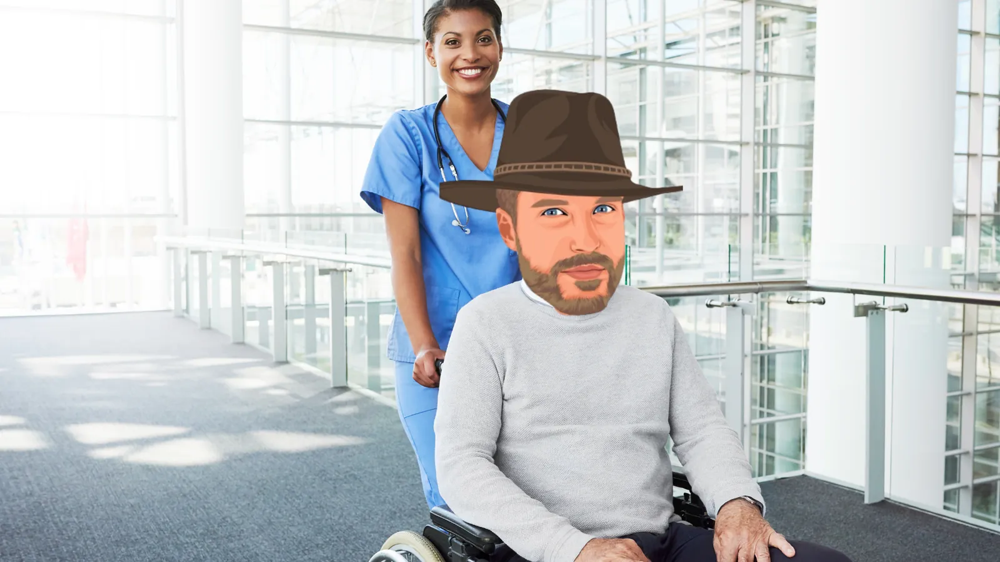
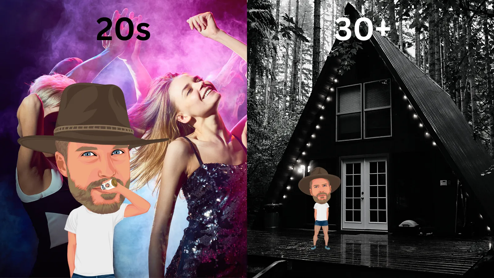
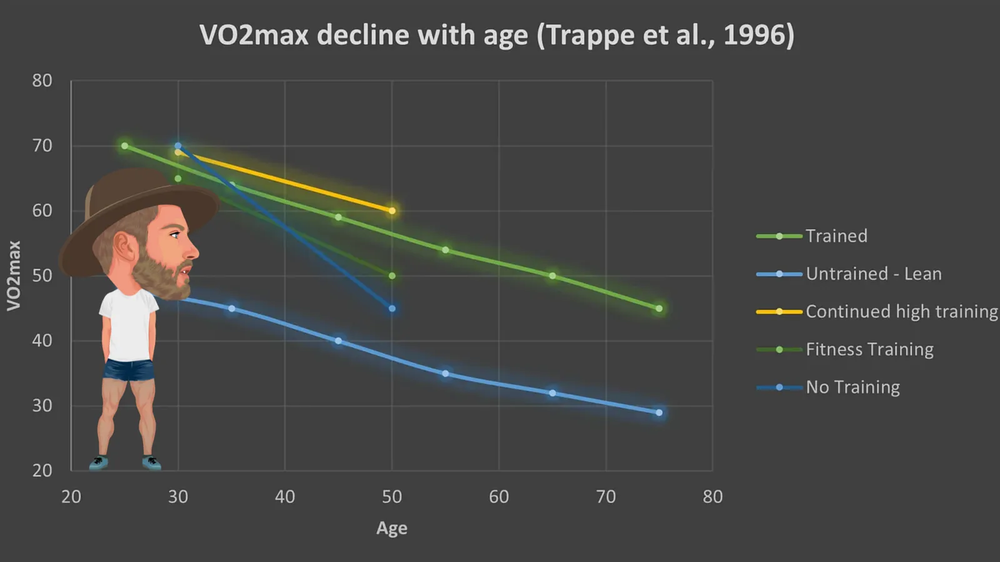
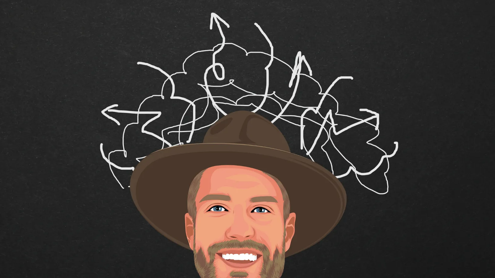
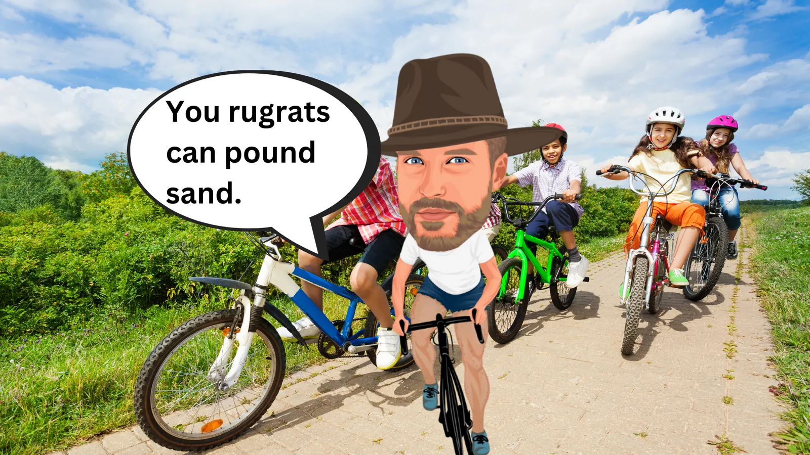

The oldest Tour de France winner was 36. If you glance around the pro peloton, you’ll notice that few cyclists are sporting terrible Just For Men applications because there’s no one left old enough to deal with the indignity of suicidal hair cell pigments – they had the sense to retire.
Further, a casual glance at the conventional wisdom in endurance circles suggests that past 30 or so, every cyclist, no matter how talented, begins a precipitous slide from their towering physical peak to a retirement home.
Worse, you start hearing a chorus of knowing, unsolicited advice from normies. Is your bingo card ready?
“Well, I’m over ___ now; I’m getting old!”
“Just wait until you’re ___.”
“I can’t ride like I could when I was ____.”
The older you are after 30, the more you’ve heard some variation of this, maybe even from yourself.
So, should you just give up? Sure, given that life expectancy in the western world is roughly 80, that means you won’t be competing for 50 years, but since aging is inevitable, what’s the point?
If you’ve already started posting all your bikes to eBay, pull them down – it’s nonsense. The age-related decline has been vastly overstated, and if you play your cards right, you can continue wiping the arrogant smiles off the faces of 20-somethings for decades.
Too much of the discussion around aging in endurance sports fixates on the disadvantages and none of the benefits associated with aging. As you’ll see, cycling performance is a complex, multifactorial phenomenon, and the vast majority of the factors that determine performance improve with age long before the chamber of your left ventricle shrinks to the size of a walnut.
Dumb Truths You Have to Accept - Aging lowers your physical potential.
Let’s get something harsh out of the way – fitness is the greatest determinant of cycling performance, and you have more potential to get fit when you’re younger (roughly younger than 30) than when you’re older, all other things being equal. Except, they’re almost never equal.
If someone younger read this and applied all the principles I’m laying out, assuming identical talent levels, sure, the younger person would kick your ass.
The good news? They won’t.
Why? Because youth is wasted on the youth. 99% of the young guns you line up against are forfeiting the bump in performances they get by virtue of being young through a combination of arrogance, ignorance, or indifference.
Lucky you.
Performance is an aggregate of many factors.
What contributes to performance? God, where do I start?! So many things contribute to cycling performance that someone brilliant came up with a woo-woo word to encapsulate all the factors into one – biopsychosocial.
A combination of biological, psychological, and social factors determines cycling performance. Some matter more than others, but each plays its part.
Age falls within the biological category, and it’s important. What’s the percentage? Hard to say.
What I can say is that age isn’t everything. What’s important to recognize is that entire categories – psychological and social – tend to improve with age.
So, long after you’re past your biological peak (which you didn’t even reach in the first place. More later), your psychological and social in cycling can still rise, negating and even exceeding the losses you experience through aging (to a point!)
Remember this concept. Sure, when you were 30, maybe your threshold was 330, and now, at 40, it’s 300 – 10% down in 10 years – 1% a year!
But, at 30, your diet was shit, you were hungover three times a week, you had back pain because you only rode your bike, you were trying to date three people at once, your bike barely shifted, and your primary bike racing strategy was hail mary breakaways from the gun.
Now, you’re 10 lbs lighter, never hungover, never have back pain, not chasing biddies, your bike can shift, and you only attack, as a rule, on the last lap.
Who is your money on?

Social (Lifestyle)
Ok, we’ve established that all other things being equal, in endurance sports, young beats old.
Except, age isn’t the limiting training factor for most athletes. The vast majority of an athlete’s ability to train isn’t determined by age – it’s determined by lifestyle, including (but not limited to) their location, finances, schedule, relationships, priorities, etc.
Huh?
Think about it. You might be 22 with a VO2 max of 80 ml/kg (you’re not) with enough raw physical potential to win Unbound 200 (you won’t). Except…
...you work full time, pulling down $15/hr, which barely covers your rent in a studio apartment you share with three other people, and the $800/month student loan debt you serviced to get a degree you half-assed. What's for dinner? Ramen again. Sure, you still have a little money left over after every paycheck, but you burn up all that in an increasingly expensive dating habit that involves going out on dates a couple of times and week and dropping $15/pop on sugar-free margaritas for your and your Current Thing, which is going well, except the late nights and several rounds of drinks aren't exactly doing your REM cycles any favors, nor helping you get up before work so you can get some training in before you have to punch the clock again. Afford race entries? Lol - maybe a couple. What happens if your bike breaks? Who needs to brake? And. Cycling is fun but look at all these other things you could be doing in your spare time that don't entail paying for the pleasure of living like a monk so you can get your shit kicked in.
Getting the picture?
Training and racing ALWAYS take place on the foundation of lifestyle. Is the above example extreme? Sure. Many young people have their shit way more together. Is it oddly specific in a way that suggests it’s a thinly veiled personal description? You be the judge.
You know how young people think old people are boring? They’re right, mostly. But you know what produces the highest quality training and racing? A boring, stable, consistent lifestyle.
If you’re trying to be fast on a bike, you should welcome that insult as a compliment.
Let’s briefly touch on lifestyle factors your old-ass can use to your advantage over young people:
Priority
Priority matters. If you devote most of your free time to training and racing and spend most of the rest of your life making choices that further that ambition (usually by saying no), you’re going to close the age-advantage gap quickly because younger people like to be balanced and diversify their interests.
Isn’t that adorable? Imagine trying to be a well-rounded human! You’ve been there and done that and know that having other hobbies and interests makes you more relatable and grounded as a human; it’s simply not as satisfying as putting all your free time into something so that you can be faster than someone that isn’t trying as hard.
Partying/Drugs/Alcohol
Past the age of 30 (and earlier if you’re smart/mature), two things happen as it relates to substances:
- Your recovery ability deteriorates.
- You’re 30.
In our society, it’s a right of passage in our 20s to go out a lot and get fucked up. The punchline is always the same, “Bro, I was so fucked up last night.”
Yes, and?
You’re 30+ now – use that to your advantage. Since you’re old, you shouldn’t be in a basement bar in jorts sipping vodka out of a fish bowl. You should be in bed after your dinner party disbanded at 8 pm, and no one noticed that the ‘beer’ you were drinking was an Athletic Brew.
This potential change alone is a MASSIVE advantage old people have over young people. If you don’t get Fed up, you don’t get hungover, and your training is better. If your training quality is always better because you’re never fucked up, what happens to performance?
Yeah.
Sleep
Older people can screw this up as well, but, in general, older people enjoy better sleep quality than young people. Reasons?
- They can afford a decent bed.
- They’re not living in a room with three other people.
- They know using screens late at night is bad and limit blue light at night.
- They have jobs/obligations/responsibilities, so they prioritize and stick to a routine sleep schedule because if they didn’t, their life would be a living hell.
- They don’t go to bed hammered three times a week.
Sleep is the most important recovery factor and the second, third, and fourth most important arguably only work by placebo, and even then, barely.
Volatility
Remember the hypothetical uber-talent 20-something example from above? Great. How would you characterize their lifestyle?
A) Volatile.
B) Stable.
C) Exciting
D) Boring
You’re correct – A and C. Their life is a mess, hence why it’s fun.
As you age, you make choices. You choose careers, people, living accommodations, etc. When you choose, you say no to other things. By saying no to other things, you streamline your life. You spend less time wondering who you should be, what you should do, where you should be, and who you should be with. Choosing creates stability.
When your life is stable, it’s far easier to train well consistently.
Finances
Most twenty-somethings are broke. By your 30s and beyond, shark loan lenders stop looking so tempting, and you’ve probably increased your income and achieved some measure of financial stability.
This is an enormous advantage older people have over younger people because of the resources money gives you access to.
What resources?
With money, you can buy better food, nicer bike shit, race entries, travel expenses, and better coaching. I’m probably forgetting something significant here, but even that list is formidable and significant.
Like it or not, being broke limits you as a bike racer. Yeah, there are the obvious things – you can’t afford to go to the race, much less race. Other things are insidious but more harmful, like a broken bike that makes you miss a month of training, pissing off teammates and strangers because you’re mooching off them, etc.
As an older person, this is your flex. It is your god-given duty to lord your financial superiority above them mercilessly yet subtly to avoid karmic rebuke. The sandwich method works great.
For example, talk about how you’re going to all these races they can’t afford to go to – in your tricked-out Sprinter van – and then offer to buy a younger teammate coffee. Make sure they hear your internal debate about your backup gravel wheels being Enves or…Enves, but say gas money to the races is on you.
Don’t let your conscience hold you back on this one – this is bike racing. It is not fair. Use your finances to tap into resources and opportunities unavailable to younger races while avoiding becoming a mark by showing generosity in small things. Win, Win.
Whatabout if I have a family?
There’s no question that all the lifestyle advantages in training you enjoy as you age are effectively neutralized when you have a family, especially a young family (Kids < 5 years old). Everyone knows that.
But, as much as a young family might limit your training, it also focuses your priorities.
Put simply, when you have a kid (or kids), you don’t have time to do all the bullshit you did before – you have to keep them alive!
You’d think that meant it could leave no time for training and racing, but here’s the thing – when you didn’t have kids, you wasted SHITLOADS of time, guaranteed:
- Netflix
- Fantasy leagues
- Brunch
- Late night doom scrolling
- Random hobbies
- Happy hours
- Sleeping in until 11 am
Kids exert brutal selection pressure on the things you do with your time. You have to prioritize and cut out the BS. You’d be amazed at how efficient you become and how you value your time when there’s not as much of it.

Biological
For the last time, yes, your potential to get fitter is higher when you’re younger.
However, that doesn’t mean your FTP will fall off a cliff the moment you pass 30. If you’re smart, you can manage your physical decline so well that you’ll eventually get the reputation every master’s athlete craves: doping accusations!
Training hours
The dirty secret about the inevitable decline in physical ability with age is that it assumes you’re training to your physical potential. 99% of cyclists aren’t.
Think about it – how much did you train last year? 200 hours? 300? 500? Any guesses what the lowest recommended training volume of a pro cyclist is?
750 hours. That’s 15 hours a week, or a little over 2 hours a day, and that’s on the low end.
I’d say a top-end domestic pro in the US trains about 17-20 hours a week on average, or 850-1000 hours a year, and many of them have done something like that since they were 18. When we’re talking about cyclists losing a certain percentage of fitness through aging, we’re talking about elites who push their physical limits for their livelihood and have done so for years, not someone training 200 hours a year.
Training hours, from the paragraphs above
Hours of training a year
I’m confident I could take an athlete training 200 hours a year at 40 years old and make them faster at 50 years old by increasing their training volume. They may have less physical potential at 50 than 40, but if they train to their potential at 50, they’ll still be fitter than they were at 40, training less, despite the effects of aging.
Old man legs
If you’ve ridden bikes long enough, you know what old man legs are. Some crusty 50-year-old dude shows up on the group ride, a little overweight, sporting a 1998 pink T-Mobile jersey with legs that look like they were pulled off one of the Avengers. When he gets to the front, everybody hops in line and grits their teeth as the freight train winds up. How the hell is this guy so strong?
Some endurance training adaptations take weeks, some a lifetime. Old man legs are the product of decades of turning a pie plate over and over for millions of repetitions. The result is a terrifying stack of muscles, varicose veins, and mitochondrion the size of your face.
Alan Couzens is writing a new book about Maximal Athletic Development, and he has a fascinating graph that illustrates the phenomenon of Old Man Legs.
Alan Couzens’ chart, redrawn
How long each training adaptation takes
- WeeksAnaerobic Enzymes, Blood Volume, Muscle Glycogen, Substrate shift (Fat Ox), Insulin sensitivity, Muscular Speed/Power, Lactate Tolerance
- MonthsAerobic Enzymes, Hb Mass, Muscle Hypertrophy (>LMM), Muscular Strength
- YearsAerobic Development of Type II Fibers, Structural changes of the heart, VO2max, Anaerobic Threshold
- DecadesEconomy, Aerobic/Metabolic Development of Type I Muscle Fibers, Aerobic Threshold
Show the original chart

Notice the foundation of the pyramid. That’s Old Man Legs.
Old Man Legs can’t be faked or bought. You’re not going to get them after a six week training plan. They’re the product of DECADES of training. Contrary to your wife’s (or husbands, or friends, or…) accusation, no, all those hours you spent cycling weren’t a waste of time!
When you come across a legend in cycling who still competes well into their 50s and gives even the open P12 field a run for their money, you might wonder how they do it. The secret is out in the open: ride lots for decades and see what happens.
Specificity
Specificity in training theory means that your training demands should resemble your performance demands, i.e., if you want to race bikes fast, your training shouldn’t be bowling; it should involve bikes.
Older athletes have years and sometimes decades of training experience. Even if they’re somewhat out of touch with their body, even an inattentive older athlete usually has a good idea of their strengths and weaknesses, and what combination of strength and intensity works best for them to achieve peak performance.
Knowing what specific work produces the best results is a benefit of age that comes from experience. Consequently, an older person’s training quality can be much higher than a younger, inexperienced athlete who just hasn’t had enough years to figure out what works for them.
Mobility
Most cyclists aren’t athletes, especially younger athletes. I mean, they can’t move their body through a full range of motion, much less through a range of motion through the five principle movement patterns while holding tension.
They’ll get away with it for a while until their late 20s come around, and they start noticing something – back pain. Shoulder pain. Numbness in the hands.
“Must be getting old,’ they think.
Or they’ve spent the last decade training in one plane, not firing any of their major muscle groups like the glutes, which forces smaller muscles to compensate and do jobs they can’t handle.
Since you’re old, you already know this. You’ve had back pain. Hell, you may have been through a chronic injury or two. Even if you don’t like it, you know you must do weekly mobility work to keep riding pain-free.
The younger person will accept the pain as a part of riding. Advantage you.
Strength
The first thing age comes for is your fast twitch muscles, the higher force, lower fatigue-resistant fibers that allow you to be explosive on the bike.
Luckily, there’s a solution – lift weights.
What’s stopping a younger cyclist from lifting weights? Nothing. Except, they like riding their bike, and don’t notice a decrement in their explosivity, so at most, their strength training program will involve 4-8 sessions in the gym with lots of Instagram posts followed by ten months of nothing because they think lifting makes them fat.
You? You’re old. You lift year-round, at least twice a week, because you know if you don’t, it’ll handicap your explosivity and body composition.
Advantage you.
Adaptation
If a younger athlete is straight edge, their ability to adapt to a training stimulus is unbeatable to an older athlete unless you start getting some TUEs.
However, as discussed in the lifestyle section, many young athletes aren’t straight edge, AND their life is a volatile (but EXCITING!) mess.
Remember, training doesn’t make you fit; it creates the potential for adaptation. Realizing that potential depends principally on what you put in your pie hole, how much you sleep, and how stable your life is. When you’re older, you may not have the same potential to adapt, but your recovery quality, on average, can be better than your younger competitors.

Psychologically
Decision making
Your prefrontal cortex (PFC), the ‘computer’ part of your brain (as opposed to the ‘chimp’ part of your brain), doesn’t fully mature into you’re 25. This is why you decided it was a good idea to try to outrun a cop when you were 19.
If you live past 25, your youth, something magical happens – you start making better decisions. You didn’t get smarter – your raw mental ability to abstract and manipulate peaks in your early 20s – you got wiser. Okay, maybe that’s giving some people too much credit – let’s say you got better at identifying your emotions, patterns, and obstacles in life and making better decisions.
Before that hits, your decision-making of a young person can not only negate age-related biological advantages they might have over an older person – it can destroy them.
True story – one of my teammates back in the day went to the Yellow Deli for lunch one day. He was absurdly talented. But after this lunch, he disappeared, missing the entirety of the race season. In October, he texted me asking to meet up for beers. I invited him over, and he proceeded to drink 10 of them while telling me how the employees at Yellow Deli had approached him and convinced him to work in their cult, working in their restaurant for free for the past four months. After the beers were gone, he left, disappearing into the night. He never raced his bike again. ¯\_(ツ)_/¯.
Motivation/Identity
Action creates motivation; motivation doesn’t create action. When you’re old, and much of your life is driven by necessity and obligation, you don’t have the luxury of doing things when you’re motivated because if you don’t do it, who will?
This mindset bleeds over to training:
Tired today? When am I not tired? Time to train.
Windy outside? Train.
Snowy? Whatever, who doesn’t like 3 hours on the trainer?
Don’t feel like training? What does ‘feel like it’ have to do with it?
If you’ve ridden bikes long enough, you’ll notice something about your ridding habit – you ride less and less based on your motivational state and more because it’s just what you’ve done for a few decades.
The happy accident here is that functionally, you ride because you’re a rider, and riders ride. The language is subtle here, but when you are something, you do something to confirm what you are (mostly to yourself!). Ironically, it was doing something for long enough that it makes you feel like you are something.
Jesus, what am I saying? I’m saying that riding long enough becomes your identity – you become a rider. When something becomes your identity, you do it less because you feel like doing it and more because it confirms what you are.
This is a superpower.
The most important training habit is consistency. The great enemy of consistency is motivation. If you don’t need to be motivated to train because it’s just who you are, well, you’re not going to miss a lot of workouts. Cyclists who don’t miss a lot of workouts are usually fitter than cyclists who do.
Tactically
The cyclist who crosses the finish line first wins the race, not the strongest. When you’re the strongest, this pisses you off. For the rest of us, this keeps us paying exorbitant entry fees.
Chances are that you won’t be the strongest person in a race when you’re older – get over it. Here’s the thing – the stronger you are, the more likely you race like a moron, especially when you’re young. ‘Dumb-strong young guns’ like to:
- Attack from the gun.
- Attack for no reason.
- Not draft.
- Forget to eat.
- Forget to drink.
- Show off how strong they are.
- Attack in the wrong place.
- Etc.
That’s a lot of dumb.
And you know what? Bless their hearts. Let them. Watch the show. Do you know what you’re going to do?
- Stay in the top third of the field.
- Eat and drink more than you think you need to.
- Don’t use any energy you don’t need to use.
If you do only those three things, you will do well on average, even with average fitness in the peloton.
One of the blessings of old age is that you’re not strong enough to race dumb anymore – you couldn’t if you wanted to! So, race smart.
Underdog
Here’s something fun – you’re not supposed to be fast when you’re old. You’re supposed to quit and take up cigars, buy a sports car, or generally compensate in some way for your loss of physicality with your financial advantages and take up some less cardiovascularly demanding hobby.
In a race, the burden of performance is on those in their physical prime, not the people outside of it.
What does this mean? That’s right, baby – you’re an underdog again! It may have taken 25 years, but you’re right back where you started racing bikes – just like when you were 14, everyone thinks you suck!
Being an underdog is a huge advantage because there’s no pressure for you to win because you’re not supposed to. You know it, young people know it, and because you’re not supposed to win, that increases the chances you will.
People crack under the pressure of expectation. When you’re supposed to be better, it adds an extra dimension of stress to all the other stresses in race performance and often makes a racer ride in a way that hurts their performance.
Think of a racer that everyone knows is super strong. The peloton expects them to show their physical superiority – pull, attack, and cover attacks.
But no one is worried about the old guy. You’re too old to be a factor, you don’t have the power to make a move, and they can pull you back whenever they want…
…until they underestimate you and can’t, and you win.
Advantage you.

Conclusion
Getting old is not an excuse to get roasted by young people. I just spent over 3,500 words describing in detail how you have advantages over young people socially, biologically, and psychologically. I even started scoring every topic as an advantageous to a younger person or an older person and forgot to implement it across the entire article but the direction is clear – old wins.
Go on then – take your statins and get on your bike. It’s time us old-timers showed those young bucks a thing or two about how to ride a bicycle.